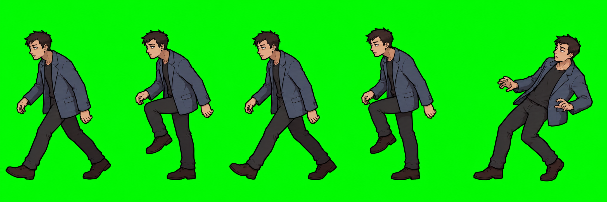
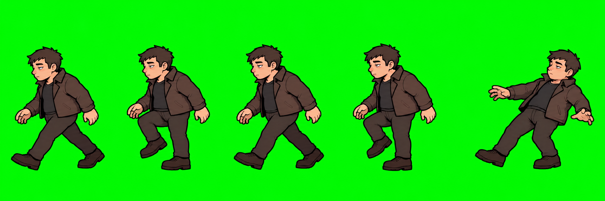

Chaque bande : quatre poses de marche vers la gauche, puis un recul déséquilibré. Fond vert opaque, aucun chargement dans le jeu.


Les PNG sont les sources complètes. Le manifeste fournit les rectangles de découpe : ne pas supposer une grille régulière ni recadrer chaque pose au plus serré lors du futur export animé.